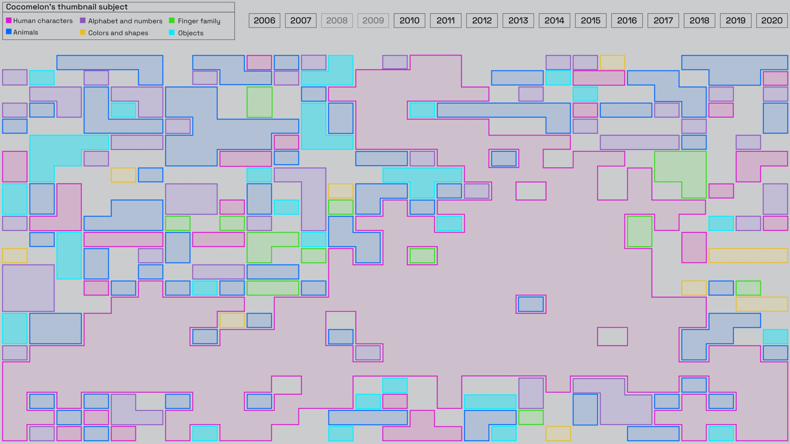
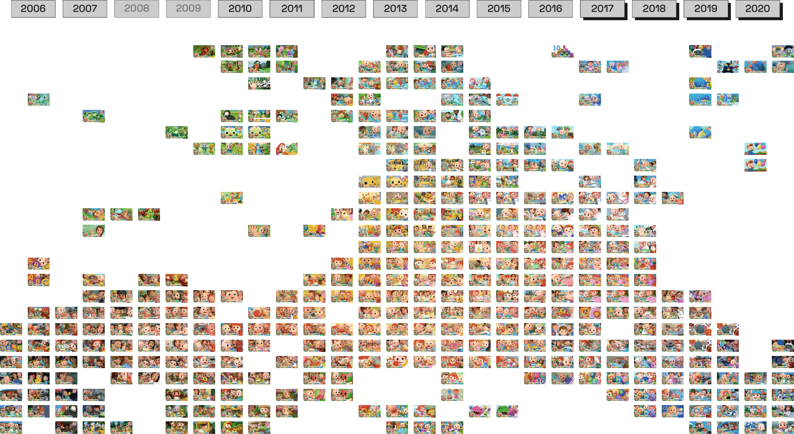

Cocomelon has been increasing the number of its publications over years. At the beginning, just a few videos were uploaded (in 2008 and 2009 no publication even occurred), then, from 2016 a change in strategy is evident, moving from 25 videos to a number of around 100 per year.

The increase of publications also corresponds to a reduction in variability of main subjects presented and an increased repetition of the same format over time.

From 2017, a slight change of strategy is evident: together with the passage to 3d images, thumbnails started focusing on characters’ centrality, presenting always recurrent layouts where few empty spaces are left from protagonists’ big faces.

Standardisation of thumbnails could be seen not only in layout formats and subjects relevancy in the occupation of their space, but even in colors. A shift to warm tones is evident, in respect of early videos published.
